FATTORE UMANO
L’Italia detiene il primato a livello europeo come nazione col più alto tasso di mortalità e tra le prime in classifica sul numero di infortuni sul lavoro.
Nei primi undici mesi del 2024 sono state 1000 le vittime sul lavoro*.
Ogni giorno in media tre persone perdono la vita sul luogo di lavoro, il posto dove ognuno di noi trascorre almeno metà della propria vita, uno spazio che dovrebbe garantire - per diritto - la sicurezza e la salute. Il bilancio delle cosiddette morti bianche, chiamate con l'aggettivo "bianche" in riferimento all'assenza di un diretto responsabile, è ancora drammatico.
In un sistema di tutela della sicurezza e della salute che risulta ancora oggi inefficace, la vera riforma in grado di cambiare la situazione italiana è quella culturale: è fondamentale che la sicurezza sul lavoro diventi una vera priorità sociale. Sono necessarie azione sinergiche da parte di tutti gli attori istituzionali, le parti sociali, il mondo produttivo e la società civile; per far sì che tutte le morti avvenute sul lavoro non siano solo un incessante ripetersi o delle ferite che nessuno riesce a suturare. Con la collaborazione di esperti e di organizzazioni che si occupano di vittime e mutilati sul lavoro, il progetto mira a raccontare e documentare attraverso il mezzo fotografico le storie e le testimonianze di vittime, famiglie e figure professionali che si occupano di prevenzione, salute e tutela, e tutto quello che avviene dopo l’incidente.
* dati Open Data INAIL
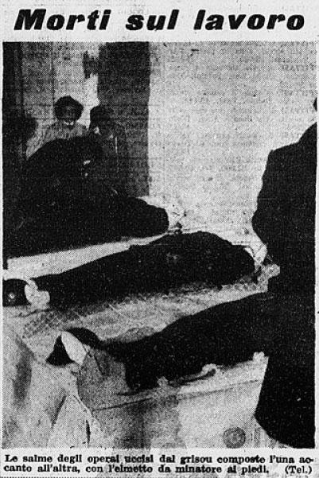
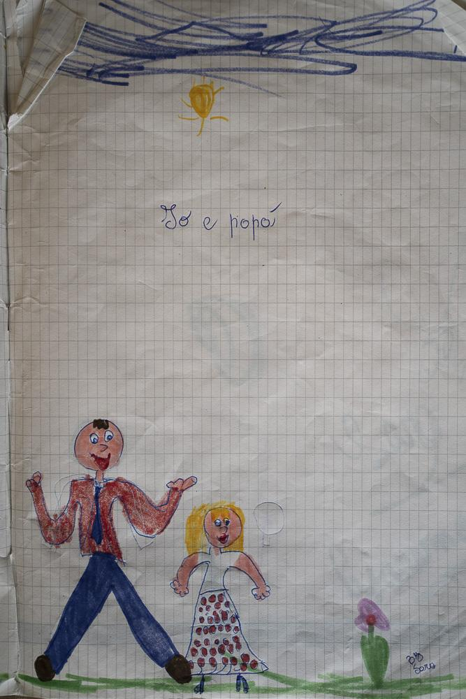
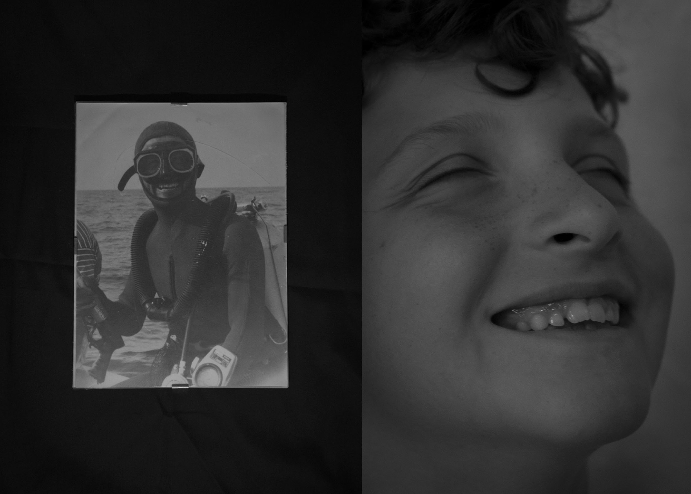
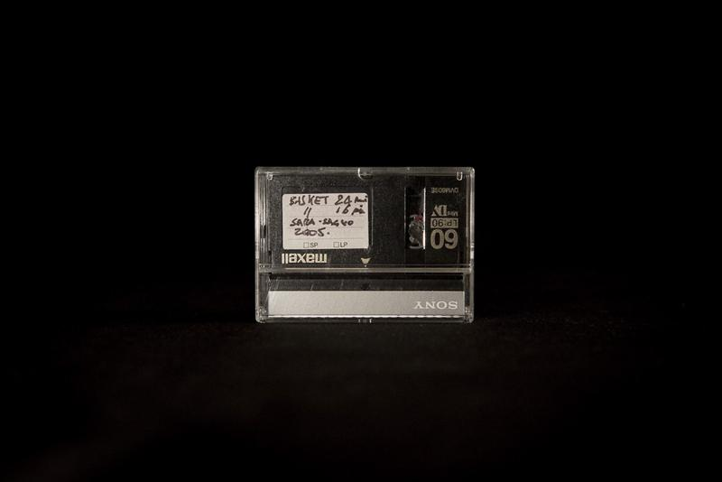
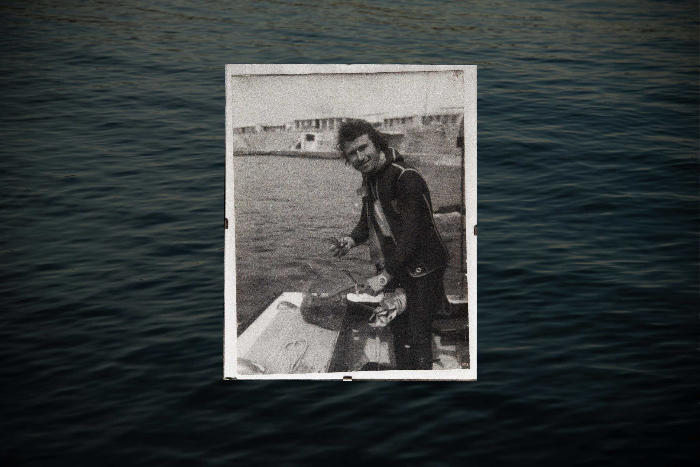
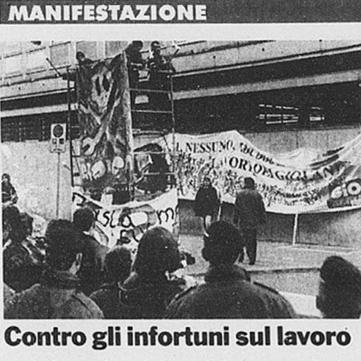
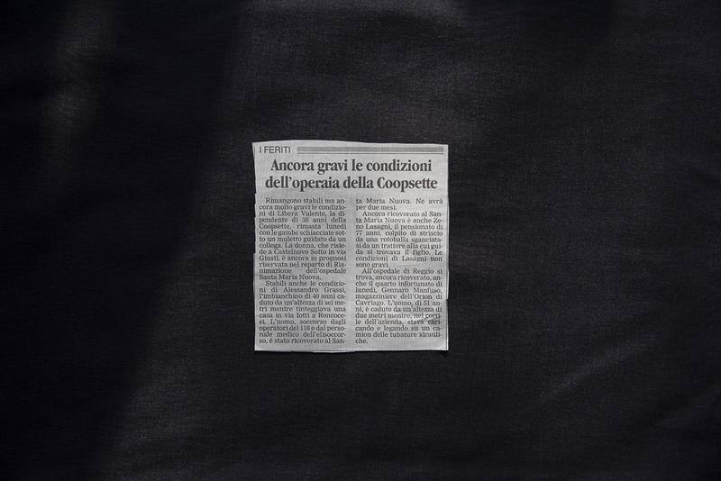
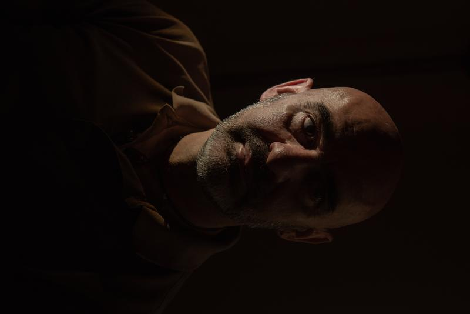
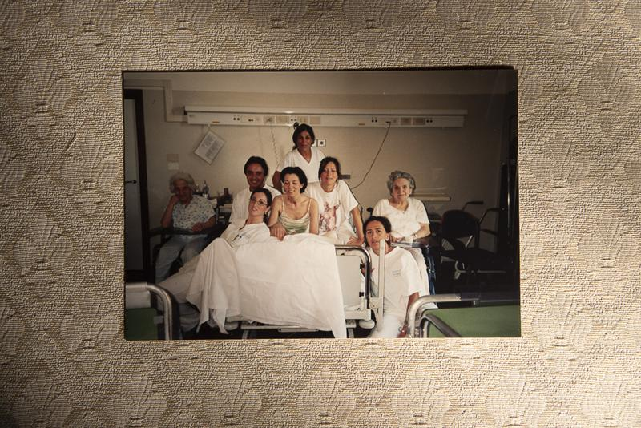
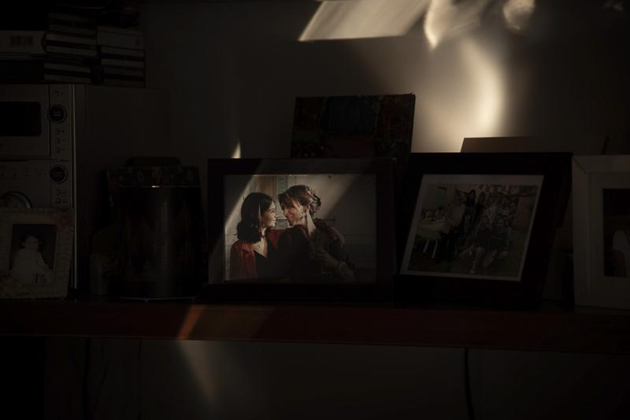
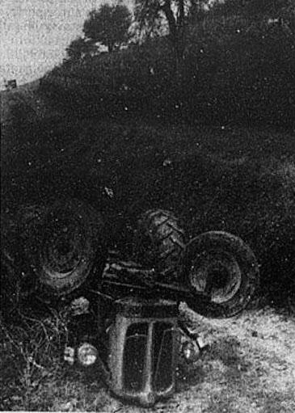
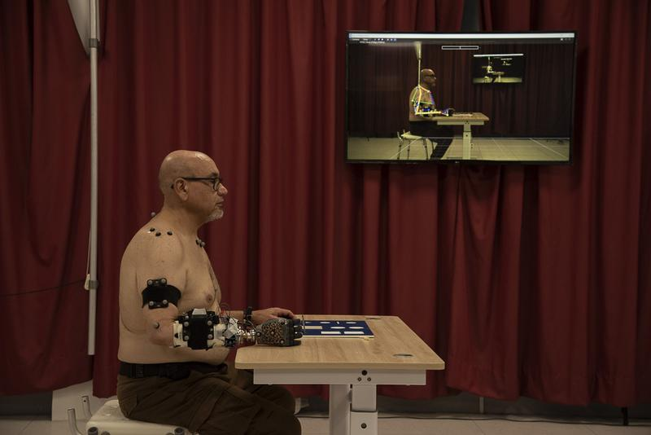
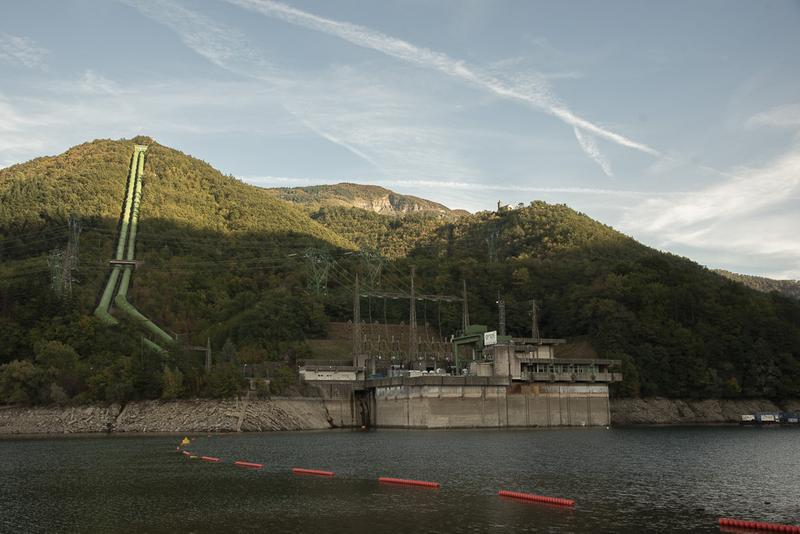
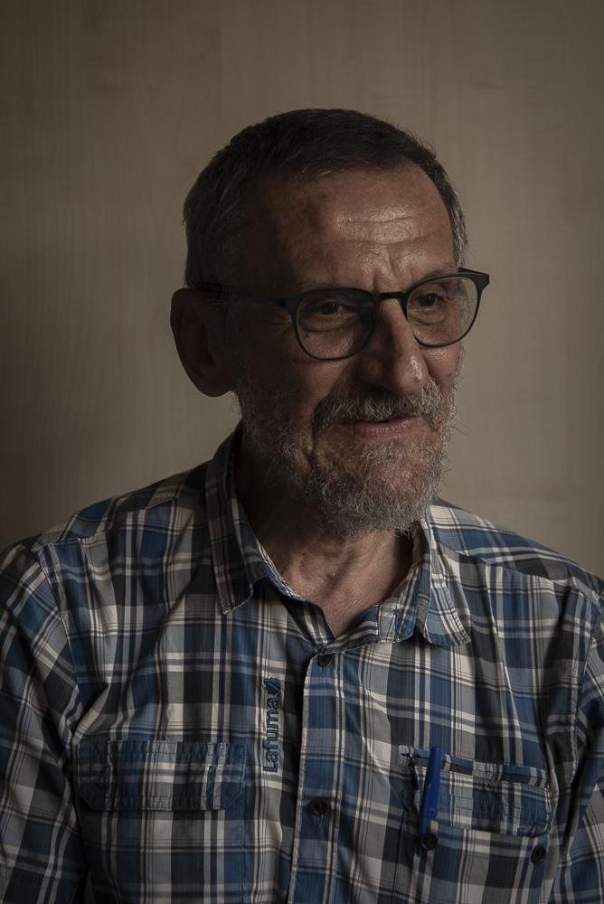
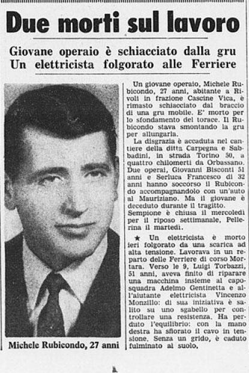